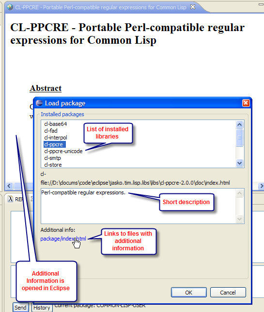
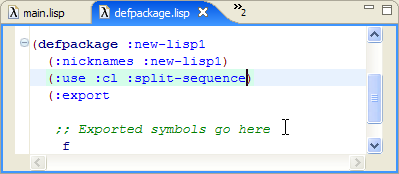

Loading Installed Library
First we will see how to use library that is already installed. One of the library preinstalled by Cusp is CL regex library cl-ppcre.
You can load cl-ppcre library by clicking on "Load installed package" button:
This opens "Load package" dialog:

In this dialog box select cl-ppcre and click OK. The library will be compiled and loaded, as can be seen in "Change package" dialog box:
To check that the library is loaded run the following in REPL: (cl-ppcre:scan "(a)*b" "xaaabd") :
Installing New Library
Installing new library is as simple as extracting its contents to one of the folders that are checked by cusp on startup. The default folder is: jasko.tim.lisp.libs/libs foder in Eclipse plugins directory. Although split-sequence library comes with Cusp I show how we'd install it. First go to cliki webpage of this library: http://www.cliki.net/SPLIT-SEQUENCE. At the end of this page there is a link where you can get this library from: http://ww.telent.net/cclan/split-sequence.tar.gz. Download it and extract to a library folder. Now restart Eclipse. This is all to make library available for loading through "Load installed package" dialog. After the library is loaded, we can run split-sequence function:
It is also possible to install library into a custome folder, not just jasko.tim.lisp.libs/libs. For this you need to add root folder to libraries in preferences. To do this go to Windows->Preferences... menu, and select Lisp->Implementations page:
With such settings it is now possible to extract split-sequence.tar.gz to c:/temp/system folder for library to be immidiately visible to lisp after Cusp restarts.
Using External Library in Your Package
Once a library is installed you can use functions it exports in your code. To do this you need to perform three steps:Add the library to :depends-on clause of .asd file.Add the library to :use clause of defpackage.lisp file.Use library functions in your .lisp files.
As an example let's use library split-sequence in our new-lisp1 package (note that at this point this library should be loaded into lisp with (require 'split-sequence) statement):
Specify that our new-lisp1 package should load split-sequence before it can operate correctly. To do this, open new-lisp1.asd file and add :split-sequence to :depends-on clause (don't forget to save file):
Declare that package new-lisp1 uses library split-sequence. To do this go to file defpackage.lisp and add :split-sequence to :use clause (don't forget to save file):

Define function split-path in the package new-lisp1 as follows:
Now we can test the new function by running (new-lisp1::split-path "usr/bin"):
When you next time start new lisp session you no longer need to load split-sequence library - it will be loaded automatically when you choose Load asd in context menu of new-lisp1.asd file.
Back to table of contents